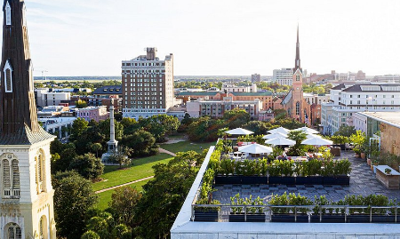
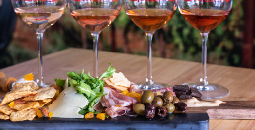

With its romantic cobblestone streets, blooming window boxes, and undeniable Southern charm, Charleston is a storybook setting for a bridal shower. The city effortlessly blends historic elegance with modern sophistication, offering a diverse array of venues perfect for celebrating the bride-to-be. From sun-drenched garden courtyards to chic, glamorous lounges, you can find the ideal spot to match any bride's style. Here's a guide to some of the best locations for hosting a bridal shower in Charleston.
Elegant & Timeless Venues

For a truly breathtaking event, Cannon Green is a premier choice. This downtown venue features a stunning courtyard filled with lush greenery and a 19th-century facade, alongside a bright, airy indoor space. It provides a picture-perfect backdrop for an upscale shower. Another historic gem is The Gadsden House, a beautifully restored 18th-century manor. With its grand double piazzas, elegant ballrooms, and private courtyard, it exudes classic Charleston grace. For a touch of pure glamour, consider Camellias at the Hotel Bennett. This stunning, all-pink champagne and caviar bar is an exquisitely decorated space perfect for a high-end, intimate gathering that will have every guest feeling pampered.
Charming Brunch Celebrations

A bridal shower brunch is a classic for a reason, and Charleston's culinary scene delivers. 82 Queen offers the quintessential Lowcountry experience with its beautiful, leafy courtyard and award-winning Southern cuisine. It's a fantastic spot for a relaxed yet refined brunch. For a bride who loves a lively atmosphere, The Darling Oyster Bar is a popular spot with a bright, vintage-inspired interior. Its raw bar and delicious brunch menu make for a fun and festive celebration. For the foodie bride, a reservation at Husk is sure to impress. Located in a historic home, its ever-changing menu focuses on elevated Southern ingredients, providing a sophisticated and memorable dining experience.
The Traditional Bridal Shower Activity

If you're looking for a traditional Charleston activity that never fails Michael can provide. Call or text him for a booking. This private Charleston Party Favor never fails and hard to replace with other overpriced or not so fun options. It is a intimate group idea that is the hottest but professional, no matter where you are. Go with a pro for the best authentic experience.
Unique & Interactive Experiences
If you're looking for something beyond a traditional luncheon, Charleston has many creative options. Host a hands-on shower at Candlefish in their candle-making workshop. Guests can enjoy champagne while learning to create their own custom-scented candles—a wonderful party favor and a fun bonding experience. For a truly unique celebration, consider chartering a private boat with Charleston Harbor Tours. A daytime cruise around the harbor provides stunning views of the city, the Ravenel Bridge, and Fort Sumter, creating a relaxed and scenic environment for opening gifts and toasting the bride. Another great option for an intimate group is a class at the Zero George Cooking School, where you can learn to prepare a gourmet meal together in the school's professional demonstration kitchen.